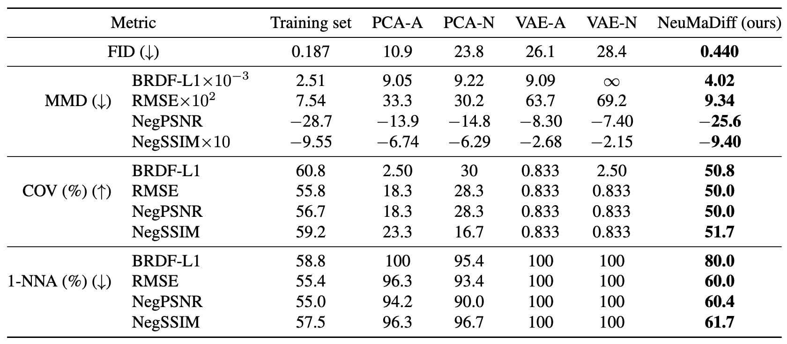

This project is formerly known as NeuMaDiff: Neural Material Synthesis via Hyperdiffusion.


Abstract
High-quality material synthesis is essential for replicating complex surface properties to create realistic scenes. Despite advances in the generation of material appearance based on analytic models, the synthesis of real-world measured BRDFs remains largely unexplored. To address this challenge, we propose M^3ashy, a novel multi-modal material synthesis framework based on hyperdiffusion. M^3ashy enables high-quality reconstruction of complex real-world materials by leveraging neural fields as a compact continuous representation of BRDFs. Furthermore, our multi-modal conditional hyperdiffusion model allows for flexible material synthesis conditioned on material type, natural language descriptions, or reference images, providing greater user control over material generation. To support future research, we contribute two new material datasets and introduce two BRDF distributional metrics for more rigorous evaluation. We demonstrate the effectiveness of M^3ashy through extensive experiments, including a novel statistics-based constrained synthesis, which enables the generation of materials of desired categories.
Dataset and base model
Our NeuMERL dataset are uploaded at AI community Hugging Face NeuMERL dataset, which contains 2400 BRDFs.For material synthesis, the weights of the pre-trained base models are uploaded at Hugging Face Synthesis model weights.
Material synthesis framework
Novel metrics for material synthesis
The evaluation mainly focus on the fidelity and diversity of the synthesized materials, which is still an open problem in this field. To fill in the gap, we raise the idea of utilizing Minimum matching distance (MMD), Coverage (COV) and 1-nearest neighbor (1-NNA) with either the image quality metric or the BRDF distribution as underlying distance function.Please refer to our paper about the details of the BRDF distributional metrics. We demonstrate the effectiveness of M^3ashy through extensive experiments, including on this brand-new series of metrics.
Unconditional synthesis evaluation


Multi-modal synthesis evaluation
We demonstrate the conditional synthesis capabilities of M^3ashy across various modalities of input: material type, text description, or material images.
The synthesized materials are diverse and closely align with the specified material type.

M^3ashy synthesizes materials aligning with the texts and generalizes to unseen inputs: “green metal”, “red plastic”, and “highly specular material”.

In each of the six pairs, the left image is the conditioning input, while the right image is the synthesized result. M^3ashy effectively generates realistic materials that closely align with the conditioning images.
Constrained synthesis evaluation
We classify materials into seven categories based on their reflective properties: diffuse, metallic, low-specular, medium-specular, high-specular, plastic, and mirror, via a novel approach called constrained synthesis.It complements our conditional pipeline by enforcing constraints on unconditionally synthesized samples, allowing for targeted material generation according to desired reflective characteristics. Please refer to our paper regarding the statistical constraints details.

Ablation Study
To assess the impact of our augmented material dataset Aug-MERL, we further train our model on the original MERL dataset in the unconditional synthesis task. We report both quantitative and qualitative results for this model, presented in the “MERL100” columns. The results indicate that the model trained on Aug-MERL exhibits higher quality and diversity compared to the one trained on MERL, demonstrating the effectiveness of our augmented dataset in enhancing the synthesis pipeline.Additionally, we conduct sparse BRDF reconstruction and BRDF compression experiments following a previous method (Gokbudak et al. 2023). For sparse reconstruction, we set the sample size to N = 4000, while for compression, we use a latent dimension of 40. In both experiments, we train the model on either the original MERL dataset or the AugMERL dataset. The results in the below table demonstrate that training on AugMERL consistently enhances material quality across all evaluated metrics, further validating the effectiveness of our augmented dataset.
| Metric | Sparse reconstruction | Compression | ||
|---|---|---|---|---|
| MERL | AugMERL | MERL | AugMERL | |
| PSNR (↑) | 32.2 | 36.3 | 45.2 | 48.3 |
| Delta E (↓) | 2.1 | 1.8 | 0.693 | 0.623 |
| SSIM (↑) | 0.972 | 0.983 | 0.994 | 0.994 |
Citation
If you found the paper or code useful, please consider citing,@inproceedings{
M3ashy2026,
author = {Chenliang Zhou and Zheyuan Hu and Alejandro Sztrajman and Yancheng Cai and Yaru Liu and Cengiz Oztireli},
title = {M$^{3}$ashy: Multi-Modal Material Synthesis via Hyperdiffusion},
year = {2026},
booktitle = {Proceedings of the 40th AAAI Conference on Artificial Intelligence},
location = {Singapore},
series = {AAAI'26}
}@misc{
NeuMaDiff2024,
title={NeuMaDiff: Neural Material Synthesis via Hyperdiffusion},
author={Chenliang Zhou and Zheyuan Hu and Alejandro Sztrajman and Yancheng Cai and Yaru Liu and Cengiz Oztireli},
year={2024},
eprint={2411.12015},
archivePrefix={arXiv},
primaryClass={cs.GR},
url={https://arxiv.org/abs/2411.12015},
}The website template was inspired by FrePolad.